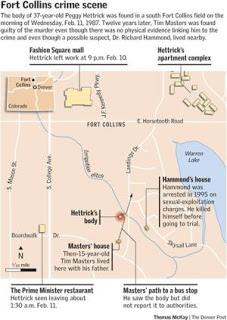

“Baldrick ... are the words `I have a cunning plan' marching with ill-deserved confidence in the general direction of this conversation?”
Edmund Blackadder, from “Blackadder Goes Fourth”

Time, the subtle thief of youth -- with a corrupt "justice" system as a cohort: Tim Masters as a 15-year-old (left), as a 36-year-old prison inmate today (below).
At age 36, Tim Masters of Fort Collins, Colorado doesn't much resemble the skinny, troubled 15-year-old he was when he was identified as a suspect in the murder and sexual mutilation of 37-year-old Peggy Hettrick. The murder took place in February 1987. Tim, who immediately became a suspect, was convicted of that crime in 1999 and sentenced to life in prison without parole.
His case has now been re-opened by his former defense attorneys, acting with the support of a growing coalition of people convinced that whatever else Tim Masters might be, he is certainly not Peggy Hettrick's murderer – and that he is a victim of a grotesque injustice.

Meanwhile, the two prosecutors who won Masters's conviction on the basis of extravagantly speculative “expert” testimony and the most tenuous of circumstantial evidence, are now working as trial judges. Masters's defenders claim, on the basis of evidence far more compelling than that used to win his conviction, that the prosecutors – Terry Gilmore and Jolene Blair – conspired to withhold vital evidence from the defense.
Among that concealed exculpatory evidence was the existence of a much more credible suspect. Dr. Richard Hammond, an eye doctor who lived near the murder site, committed suicide in 1995 while awaiting trial on sexual misconduct charges. He was accused of rigging a covert surveillance camera in a downstairs bathroom for the purpose of recording close-ups of women's genitalia. Hammond was a social acquaintance of Terry Gilmore. And Hammond, as Tim's defense team wouldn't learn until after he had been convicted, had been investigated in the murder of Peggy Hettrick.
Last July, Erik Fisher – who served as one of Tim's defense attorneys – confronted both Gilmore and Blair over their refusal to disclose the existence of a second suspect in the case. In testimony at a hearing into reopening the case, Fisher testified that the prosecutors-turned-judges told him that they had investigated Dr. Hammond and determined that he was not “a viable suspect,” summarized the Loveland Daily Reporter-Herald.
“They don't get to make that call,” insisted Fisher. “If it's a close case, they don't get to be the defense attorneys [in addition to being the prosecutors] They have to turn it over, then we'll fight about whether he is a viable suspect. That's their obligation.”
This is certainly true in a legitimate adversarial process in which the rules governing discovery are followed by conscientious officers of the court seeking to establish the truth in order to punish a horrible crime and protect the public. Such duty-bound prosecutors – beings apparently as mythical as Jedi Knights – would have disclosed these facts to the defense, knowing that they would be used to sow reasonable doubt in the minds of jurors.
Nathan Chambers, Tim's other defense attorney, believes that this was not an oversight, but an example of incorrigible bad faith and outright prosecutorial corruption.
“I assumed, and I was wrong to do so, that I was dealing with honorable people,” lamented Chambers during his turn on the witness stand. “I assumed that the prosecutors and police would try this case according to the rules.”
Forgive me for saying so, but the fact that Mr. Chambers, an educated, professional adult, could be hostage to such ingenuous beliefs about police and prosecutors suggests that he's just the kind of person who would fall prey to the Nigerian Advance Fee Bank Fraud.
Hammond's home was near the spot where Peggy's body was found. Hammond was interviewed by the police shortly after the murder, but it's not clear when his sexual deviance became known to the authorities. He had a penchant for taking close-up photographs of those specific anatomical features that were mutilated by Peggy's murderer.
Furthermore, Terry Safris, a woman who worked in the bar where Peggy was last seen, and who strongly resembled her, received threatening phone calls. She later spotted a man outside The Prime Minister – a restaurant Peggy visited shortly before being killed – who was making stabbing-like motions with what appeared to be an icicle. The description Terry gave to the police was a very close match for Dr. Hammond: Mid-30s, white, athletic build (Hammond was an avid weightlifter), with sandy hair and a square jaw.
Significant upper-body strength would have been required to drive a five-inch knife blade as quickly and deeply as the murder weapon was used against Peggy -- and then to drag her lifeless body a significant distance from the murder site. This suggested that the murderer was a strong adult man.
Given all of this, why did the police fixate immediately on Tim Masters, a skinny 15-year-old with (at the time) shaggy hair and pipe-cleaner arms? In part, they were misdirected into focusing on Tim because of the untethered musings of behavioral “experts” from the FBI.
The theory of their case, which was taken from a Bazooka Joe-level adaptation of Freud's most emancipated conjectures into human behavior, was that Tim was driven to kill Peggy as a form of “displaced matricide.” Y'see, the murder happened on the anniversary of his own mother's sudden and unexpected death; his mother, like Peggy Hettrick, had red hair. This was what supplied the “motive.” Tim's small collection of knives supposedly provided the “means.”
The “opportunity” element of the case was even less compelling, since it would have been necessary for the 15-year-old to commit the murder at 1:20 am on a school night, drag the body a considerable distance from the actual site of the killing (another detail withheld by the police from the defense), and dispose of every molecule of physical evidence in one exquisitely disciplined outburst of murderous rage directed at a perfect stranger – and still get to school on time the following morning.
Tim first came to the attention of the police when his father Clyde told them that Tim had deviated from his normal route to catch the school bus the morning of the murder. It turned out that the object that had caught Tim's attention, dragging him momentarily away from his familiar footpath, was Hettrick's dead and mangled body.
Like many (far too many, in my view) adolescent males, Tim had an abiding interest in the macabre, and was somewhat desensitized to gore. He told the police later that day – during a six-hour interrogation conducted without an attorney or a parent present – that he gave the corpse a brief once-over, concluded it was probably a mannequin left on the property by friends pulling a sick joke, shrugged his shoulders, and didn't give the matter a second thought.
A search of Tim's bedroom yielded a large volume of supposedly disturbing evidence – a concealed cache of pornography; copies of publications dealing with knives and guns; drawings and stories depicting various violent acts; and a small collection of survival knives. But no physical evidence of any kind connected Tim to the killing.
Roughly a year later, the Ft. Collins Police, aided – no, make that “aided and abetted” -- by the FBI, decided to prepare a “Mission:Impossible”-style psychological trap for Tim.
At the time, the then-16-year-old Tim was already under round-the-clock police surveillance, which produced no evidence of any criminal behavior. The police department decided to publish a series of news releases announcing a “break” in the case – an FBI behavior profile that had narrowed the investigation down to a single suspect. (The FBI took care to ensure that its role would be concealed if things went pear-shaped.)
With the connivance of a local newspaper editor, the police were able to plant their disinformation in the press. And in spite of the fact that the Masters family didn't have a newspaper subscription, police anonymously deposited the paper on the front porch of their trailer every day, and also made sure that relevant clippings were placed on the windshield of a car Tim jointly owned with a friend.
The purpose of this exercise, according to a January 1988 memo from Deryle O'Dell, a police investigator, was to provoke Tim to “exhibit some behavior near the anniversary date that could be an opportunity to further tie him to the case.”
Pressed on the witness stand last week about this “psychological experiment, former police officer Jack Taylor was asked if the idea was for Tim to “freak out and kill someone.”
“Well, hopefully not kill someone,” Taylor responded.
"Hopefully."
Bear in mind that the “links” connecting Tim to the case at that point were about as strong as overcooked Ramen noodles. In fact, the only real connection he had at all was propinquity: Peggy was murdered near his home, but almost as near to Dr. Hammond's as well. Investigators suggested that there was something significant in the fact that the murder site was visible from Tim's home, only to drop that “significant” connection when it was pointed out that it was visible from Hammond's, too.
Click on map to enlarge


In fact, Hammond's depraved porn factory – the basement containing volumes of voyeuristic home-made porn, as well as evidence of a secretive shadow life built around his fetish – was 100 yards away from where Peggy's mutilated body was discovered. After this hoard was discovered in 1992, one of Dr. Hammond's associates described his unusual dexterity with a scalpel, a key consideration given that the sexual mutilation of Peggy's body included intimate excisions that only a skilled surgeon could execute.
Astonishing as it might seem, two detectives investigating Dr. Hammond urged that the doctor be treated as the prime suspect in Peggy's murder, only to see that recommendation come to naught. Lt. Jim Broderick, the lead investigator into the murder, was too busy leaning on police informants to provide him with something – anything – to keep the confected case against Tim alive.
Once again, monomaniacs who had determined that Tim Masters was the culprit. Doubtless they were disappointed – if not deterred – by the fact that Tim didn't act out violently in response to the police department's disinformation campaign in February 1988.
Another possible approach that was discarded by the police would have been to invite Masters, who had indicated some interest in a military career (he went on to serve several years in the Navy, retiring with an honorable discharge) to hang out with an “elite” police tactical team, and ask “how he would hypothetically kill someone if he were ordered to in a military-like setting,” according to a press account.
This would suggest, of course, that displaying a mindset suitable to a SWAT team would make him a plausible murder suspect. Although that assumption strikes me as a sound assessment of SWAT team psychology, the evidentiary value of such an exercise isn't obvious to rational people.
Once again, the police and prosecution deprived Tim's defense team of any knowledge regarding the targeted disinformation campaign. It wasn't until earlier this year that Tim's legal counsel stumbled across official reports describing the gambit.
In any case, insists former police officer Taylor, the ruse really wasn't that important, because “nothing happened. There wasn't anything that gave us an indication one way or another.”
This isn't true, of course: Tim's refusal to be baited into acting out would have provided the defense with yet another key opportunity to plant reasonable doubt in the minds of the jury.
But then again, it shouldn't have been necessary for the defense to cultivate reasonable doubt, because there was no material evidence connecting Tim to the murder. This didn't prevent Ft. Collins police from arresting Tim in Philadelphia in 1998, or the prosecution from putting him on trial for first degree murder when he turned down a plea bargain that would have had him out of prison in eight years – an inconceivably lenient arrangement for someone who committed such a terrifying crime.

“He admitted his guilt to us through his pictures,” insisted one juror, a comment that makes me wonder if my faith in the jury system is tragically misplaced. Former Ft. Collins police detective Linda Wheeler-Holloway (below), who investigated the Peggy Hettrick case but left the force prior to Tim's arrest, finds it all but incomprehensible that a set of teenage doodles is “the reason why Tim Masters is in prison.” Now with the Colorado Bureau of Investigation, Wheeler-Holloway has been instrumental in re-opening the case.
Disclosure of long-suppressed evidence of misconduct by police and prosecutors may succeed in winning a new trial for Tim Masters, and DNA testing could definitively exonerate him by connecting the late Dr. Hammond to the killing. But even if this best-case scenario were to unfold, these troubling facts would remain:

*An innocent man had at least eight years of his life stolen from him, in large measure because he angered vindictive prosecutors by refusing to surrender eight years of his life without a fight;
*The bizarre, obsessive focus on Tim Masters by Lt. Broderick almost certainly allowed the sex-deviant murderer of Peggy Hettrick to escape punishment for that crime;
*The prosecutors who collaborated in this monumental miscarriage of justice now preside over criminal trials as judges – appointments that were likely in some sense rewards for convicting the supposed killer of Peggy Hettrick.
*A jury of Tim Masters's peers allowed itself to be gulled into convicting that defendant of first-degree murder on the basis of “expert” testimony slightly less credible than Peter Griffin's account of the testimony offered by “The Ghost That Never Lies."
*Despite the patent implausibility of the prosecution's case, and in large measure because of a succesful effort to conceal key facts from the defense, the conviction of Tim Masters was upheld on appeal, all the way to the Colorado State Supreme Court.
To all of this must be added the “cunning” plan by the Ft. Collins police to conscript the “independent” local paper in an effort to provoke a suspected psychopathic murderer into acting out, with potentially lethal consequences to other innocent people.
How often does this kind of thing occur? Color me cynical, but I suspect that an honest answer to that question would be utterly terrifying – more so, even, than the hideous crime committed against Peggy Hettrick.
Dum spiro, pugno!
6 comments:
Perhaps if the federal government had followed its constitutional mandate of not getting involved in domestic law enforcement of this type, the whole mess would never have happened. That he was convicted by the drawings is not a surprise to me. For some time now, it has been the policy of social engineers, especially engineeresses, to suspend or expel little boys from school for drawing guns or the trade center on fire, and requiring psycho-analysis for criminal acts such as titty twisters. In one case from Seattle that I remember reading, a kid had to describe his "thinking errors" that led to giving his friend, a male, a titty twister. Nothing terrifies me more than being tried by my "peers." Then again, I don't have any better ideas.
When your peers are unprincipled leftists, not governed by a moral compass- the worst can happen as in this case and in countless others.
No wonder King David after his sin of numbering his people; when given the choice of falling into the hands of his peers or the hands of Almighty God for judgment; King David wiseley chose to trust in Almighty God, because God is merciful and His judgment is righteous. He knew how vicious and corrupt man is.,,
I shudder to think what would happen to me in this day and age if I were a young kid in school. I drew some pretty violent and macabre things when I was a kid, particularly in junior high. It's fairly typical.
and I'll just bet the new prosecutors can come up with all sorts of reasons the miscreants who committed a fraud upon the court and the jury and crimes against the defendant cannot now be tried for their crimes.
These are the people who want us disarmed. Is it any wonder?
I can understand, somewhat, making a mistake like Broderick did.
But then, when you are presented with such strong evidence that you were wrong, not admitting it when someone is in jail for your mistake?
That, I can't understand.
Sure you can, Brian. It is the same mindset that recognizable criminals have.
Post a Comment